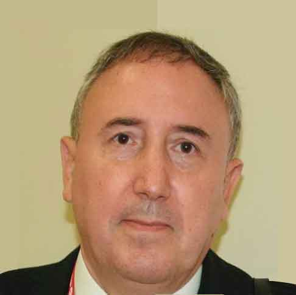

:: Sitio web de Roberto Gutiérrez durante mi etapa como diseñador gráfico en Kale Dor Kayiko
Desde 1989
Kale Dor Kayiko surgió con la única finalidad de conseguir que los niños y niñas gitanas progresasen adecuadamente en las diferentes etapas educativas.
Cartel para la Gala 20 aniversario de la Asociación
El 17 de diciembre del 2009 celebramos en el CMD de San Francisco la Gala 20 aniversario de la Asociación. Éste fue el cartel. Fotografía: Álvaro Pérez.
 Kale Dor Kayiko, por una escuela intercultural, de calidad e integradora:
Kale Dor Kayiko, por una escuela intercultural, de calidad e integradora:
El ejercicio efectivo del derecho a la educación es imprescindible. Así surgió en 1989 Kale Dor Kayiko. Era necesario ayudar a los y las profesionales que trabajaban con el alumnado gitano:
- Al equipo directivo de los Centros educativos,
- Al propio profesorado que atiende a estos niños y niñas en sus aulas,
- A las instituciones públicas y privadas.
Facilitarles formación específica y asesoramiento. Ayudarles a entender las diferencias, a verlas; a 'reconocerlas'.
Y, naturalmente, a los padres (padres y madres) y a la propia familia del alumnado. Los padres, las madres y la familia: Especialmente importante en la educación de todos los niños y niñas, pero especialmente importante en la educación de los niños y niñas gitanos.

 Premios KDK
Premios KDK
Todos los años Kale Dor Kayiko organiza los premios KDK para premiar al alumnado gitano que finaliza una etapa educativa.
- Bizkaia: 11 ediciones. Auditorium de la Universidad de Deusto.
- Gipuzkoa: 6 ediciones. Aula Magna de la UPV.
Cartel y tríptico
Cartel (arriba) Premios KDK 2010 (38'5 x 31'5 cm.).
Trípticos Premios KDK 2010 (A4).
Premios KDK: Animarles a estudiar y demostrar lo que valen
La motivación por el estudio es clave fundamental para lograr el éxito escolar, pero el abandono prematuro de la escolaridad es todavía demasiado elevado en el alumnado gitano. Seguramente, entre otras razones, porque faltan modelos de referencia en los que puedan fijarse.
Por este motivo Kale Dor Kayiko, desde el año 2000, lleva organizando los premios KDK para el alumnado gitano que finaliza una etapa educativa con evaluación positiva.
 Satisfacción
Satisfacción
Manifestarles la satisfacción que supone para su pueblo el que hayan aprovechado la oportunidad que sus mayores, en la mayoría de los casos, no tuvieron.
Reconocimiento
Reconocer públicamente el trabajo y esfuerzo realizado por este alumnado a lo largo de toda su escolaridad, por su profesorado así como por sus familias.
Los centros educativos y su profesorado
Naturalmente, no sería justo olvidar a los propios centros y los profesores y profesoras que con su esfuerzo, día a día, consiguen que cada vez más niños y niñas terminen las diferentes etapas educativas con éxito.
Fotografía: El Tío Manuel (Manuel Vizarraga), presidente de Kale Dor Kayiko y Begoña Algarabel, Jefa de estudios de 4º y 5º en el Colegio Goya. Auditorium de la Universidad de Deusto - 2009.

 Acompañados y acompañadas de toda su clase
Acompañados y acompañadas de toda su clase
En Gipuzkoa, especialmente, es muy habitual que acompañen a los niños y niñas gitanos el resto de compañeros y compañeras de clase.
Es realmente muy emocionante: Cuando tus propios compañeros te acompañan a recibir un premio tiene que ser necesariamente porque te quieren, te valoran y te aprecian.
Fotografía: Premios KDK 2009. Izquierda: UPV en Donosti. Derecha: Universidad de Deusto en Bilbao.
Y como no:
Sin ellos, nada de esto sería posible. En Bizkaia: El Gobierno Vasco, la BBK y la Universidad de Deusto. En Gipuzkoa: La Diputación y la UPV...
No únicamente es el apoyo económico. A veces es más incluso la ilusión con la que colaboran; las muestras de cariño y complicidad con las que compartimos este objetivo juntos.
|  |
Fotografía: Begoña Ortuondo, Responsable de la Obra Social de la BBK y Rosa Santibañez.

Editorial:
 La importancia de los Centros educativos en el éxito escolar:
La importancia de los Centros educativos en el éxito escolar:
El Colegio Mina del Morro
Yo era el diseñador gráfico: Normalmente no solía tener la oportunidad de ir a los centros educativos. Pero en 2010 tuve la posibilidad de asistir a la semana de la Interculturalidad que organizaba el Colegio Mina del Morro.
Kale Dor Kayiko participó con una pequeña actuación de flamenco. Me llamó la atención (y me sorprendió incluso) el cariño con el que las profesoras de Mina del Morro animaban a sus alumnos y alumnas de etnia gitana a sentirse orgullosos de "su música"y su cultura.
Reforzarles su identidad cultural tiene que ser necesariamente muy positivo para una correcta escolarización y para tu propia autoestima como alumno y alumna
Frente a las dificultades, es muy sifnicativo el esfuerzo que el profesorado de muchos colegios realiza para suplir la falta muchas veces de otro tipo de recursos.
En cualquier caso Mina Del Morro no es ninguna excepción. Es impresionante el esfuerzo que realiza el profesorado: los profesores y las profesoras de los distintos centros del País Vasco, en muchas ocasiones en condiciones nada sencillas, que están, poco a poco, consiguiendo que la escolarización de los niños y niñas gitanos se produzca cada día con más normalidad.
{kind=link}


Pequeño álbum de fotos.
 ::/ Certamen KDK 'Jóvenes promesas del Flamenco'
::/ Certamen KDK 'Jóvenes promesas del Flamenco'
Triana, Sevilla... Otxarkoaga, Zabala, Txurdinaga...: BILBAO!!
 Certamen KDK 'Jóvenes promesas del Flamenco'
Certamen KDK 'Jóvenes promesas del Flamenco'
No 'únicamente' un certamen de Flamenco
Durante mi etapa en Kale Dor Kayiko organizamos el Certamen: 'Jóvenes Promesas del Flamenco'.
- 2008: BilboRock.
- 2009: Palacio Euskalduna.
- 2010: Alhóndiga de Bilbao.
Un día para convivir juntos: población gitana y no gitana. Conociéndonos mejor, aprendiendo juntos...
Karipen: Programa de Promoción de la Cultura del Pueblo Gitano de Kale Dor Kayiko
2008: 1er Certamen 'Jóvenes Promesas del Flamenco'.
A la derecha: Plotter 1 y 2 (1x0'90m).
Certamen 2009:
Palacio Euskalduna Jauregia - Bilbao
Fer, presentador del certamen.
Mediador Social de Kale Dor Kayiko
Esther Amaya. 2º premio en la edición del 2009 y del 2008
Es impresionante como transmite Esther Amaya encima de un escenario y delante de una cámara. Su actuación en el BilboRock, en la edición del 2008 fue simplemente genial.
Tío Manuel (Manuel Vizarraga). Presidente de Kale Dor Kayiko.
Un punto de encuentro...
El Certamen no dejaba de ser una excusa para "acercarnos". Nos daba la oportunidad a la población gitana y a la no gitana de conocernos mejor.
Edición 2010:
7 de diciembre de 2010. Auditorio de la Alhóndiga de Bilbao.
Muy pronto ¿la edición 2012?
 Más información: Sitio web 'Jóvenes Promesas del Certamen' - Kale Dor Kayiko.
Más información: Sitio web 'Jóvenes Promesas del Certamen' - Kale Dor Kayiko.
Fotografías: Dani Blanco
Un fotográfo de Donosti para un certamen que se celebra en Bilbao...
Dani Blanco es de Donosti y le conocimos a través de unas fotografías que vino a realizar a la asociación. Aquellas fotografías nos gustaron especialmente. Un fotográfo de Donosti para un certamen en Bilbao: Este Certamen refleja interculturalidad en cada detalle...
;)
Nunca te daremos suficientemente las gracias por estas geniales fotografías, Dani. Nunca. Un abrazo, Dani. Visita su sitio web...
Visita su sitio web...
 ::/ Kerandoj
::/ Kerandoj

 "Ke-ran-doi": Área de Orientación Laboral de Kale Dor Kayiko
"Ke-ran-doi": Área de Orientación Laboral de Kale Dor Kayiko
Kale Dor Kayiko, 20 años trabajando en el País Vasco por la promoción, formación, participación e inclusión en la sociedad del Pueblo Gitano.
En la fotografía: Victoria Jiménez (al fondo: Iraide Díez).
Difusión del Área en internet:
Sitio web realizado en Flash que sirve como entrada al Portal de empleo
¿Estás buscando empleo? "Kerandoi" te ayuda.
Este sitio web tiene como objetivo servir como apoyo al área en las presentaciones que se realizan para explicar qué es "Kerandoi", qué le hace diferente de otros servicios de orientación al empleo y por qué es, seguramente, un complemento indispensable al resto de servicios de orientación laboral. Y sirve como presentación a nuestro Portal de empleo - web.
En Kerandoj (Kerandoi), "queremos" ayudarte a buscar un empleo. Y la web trata no de decirlo, intenta conseguir hacerte "sentir" que efectivamente es así: Y lo es, además.
¿Por qué es necesario un servicio de orientación laboral como kerandoi?
Este pequeño banner para la web intenta explicarlo. ¿Qué es "Kerandoi"y para qué sirve?
Puede parecer que ya hay suficientes servicios de orientación laboral.
- Está el INEM,
- aquí en el País Vasco tenemos, por ejemplo, Lanbide.
Son servicios útiles y "Kerandoi" no pretende restarles protagonismo. Al revés, nuestro área de orientación laboral lo único que pretende conseguir es acercar estos servicios de búsqueda de empleo y de reorientación laboral, todas las posiblilidades de ayuda que ofrecen, también a los chicos y chicas gitanas, a los hombres y mujeres gitanos, a los que ocurre muchas veces que no llegan.
Difusión del Área offline
Kerandoj: Trípticos
Trípticos realizados para esta área en mi etaba en Kale Dor Kayiko.
Un ejemplo sencillo de la utilidad de Kerandoj
Extracto de la entrevista de Azul Tejerina (Hoy por Hoy Bilbao. Radio Bilbao. Cadena Ser) a Victoria Jiménez:
"Llamaba a los anuncios y me pedían el currículum. Yo les decía 'Ah, vale, vale, ya se lo enviaré', y no regresaba: Yo no sabía qué era eso del currículum, entonces esa chica me ayudó, preparamos el currículum, me hizo el seguimiento'...
Victoria Jiménez.
- Extracto de la entrevista a Victoria Jiménez
Presentación de 'Kerandoi' en las V Jornadas de Mujer Sim Romi: Mujeres gitanas trabajadoras (Emakume ijito langileak), organizadas por Kale Dor Kayiko.
Fotografía: Josu Bergara en las V Jornadas de Mujer Sim Romi. Izquierda: Rosa Jiménez. Departamento de Igualdad de Kale Dor Kayiko. Derecha: Ainara Peña: Área de Empleo ("Kerandoi").